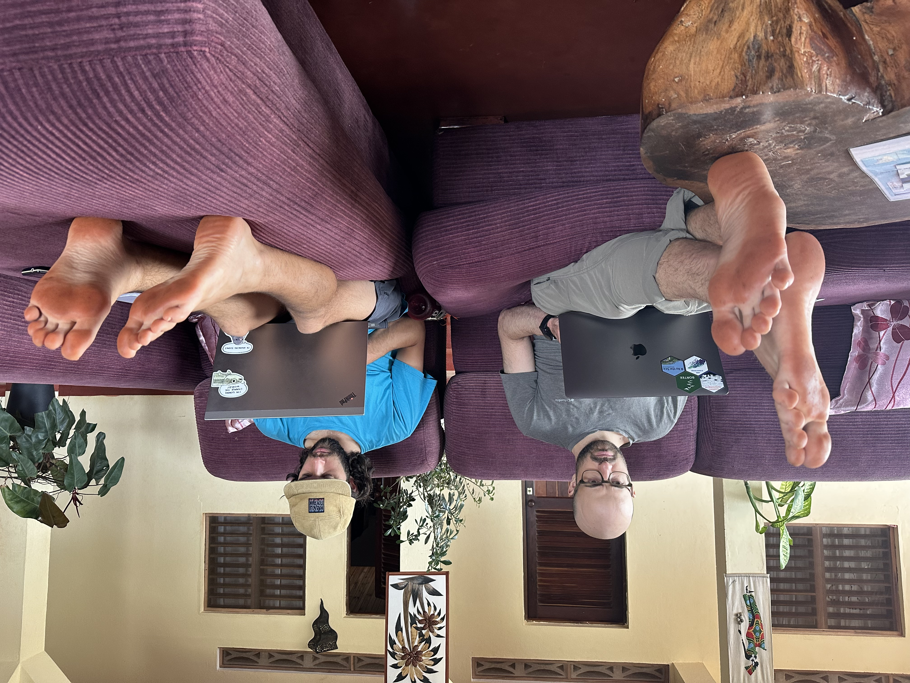
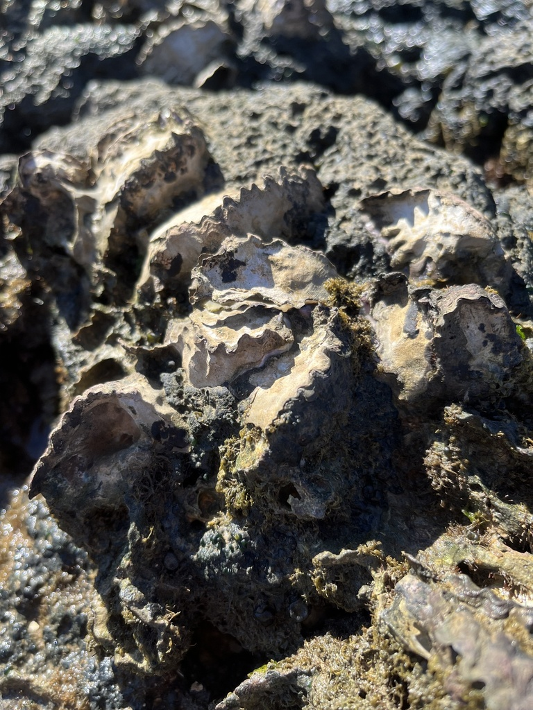
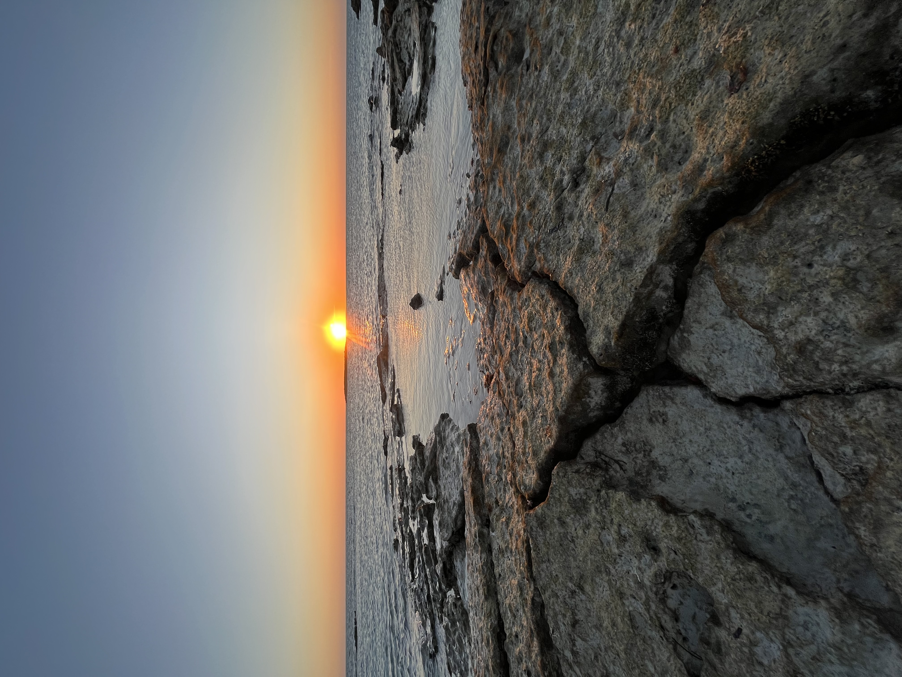
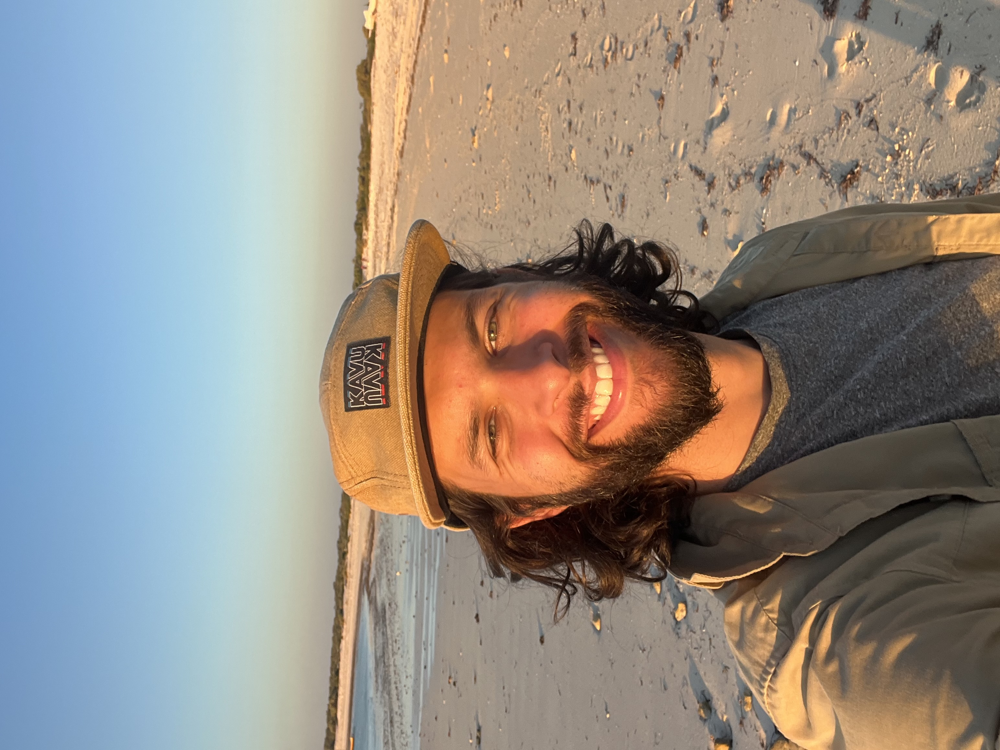
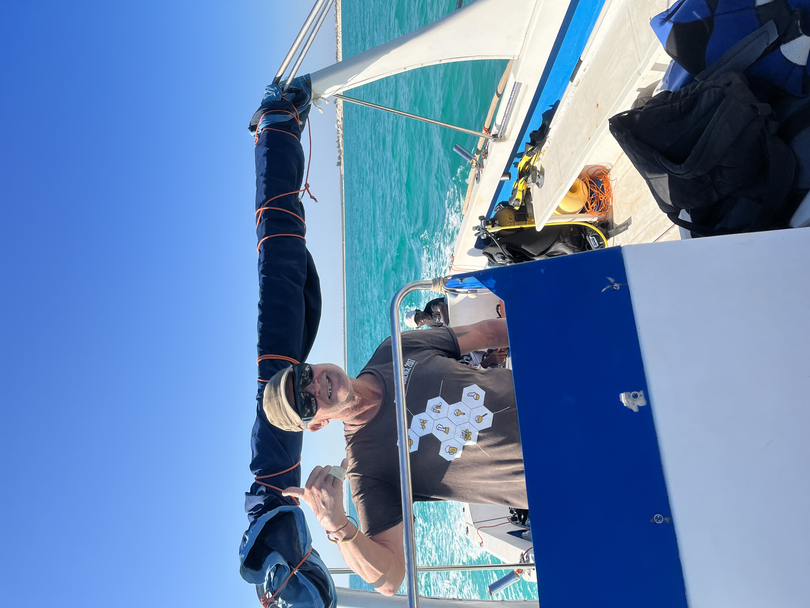

![]()
In July 2023, QMEL PI Dr. Easton White and I joined our collaborator Dr. Mez Baker-Médard (ONJA lab, Middlebury College) in Madagascar to take part in field surveys related to our joint lab NSF project. The overarching goal of this grant is to understand how different social and gender dynamics within fishing villages affect the social adhesion, efficacy, and diversity of marine protected areas (MPAs). This work is driven by Dr. Baker-Médard’s incredible team of Malagasy students and field technicians who have been collecting social and ecological data in the island’s south for years. In 2023, the goal shifted from the long, linear barrier-reef system of the dry southern coast to the rocky fringing reef systems of the wet north.

We spent the first two weeks on the island of Nosy Be, where we met the Malagasy team and established a set of survey sites outside and within protected areas. These protected areas ranged from highly managed tourist sites, to areas restricted by fady, or social taboo, rather than centralized governance or NGOs. Protected and unprotected reefs were paired with a fishing village in which our research technicians would conduct social surveys across social and gender strata. I mainly joined the ecology team, where we deployed Baited Remote Underwater System (BRUV) cameras to collect mobile fish diversity data and conducted intertidal reef surveys. I got to observe a lot of different reefs on Nosy Be, ranging from beautiful Acropora reefs with healthy inshore seagrass to badly damaged boulder reefs with little structural diversity.

As an ecologist who thinks a lot about temperature, I was more keen to observe some fascinating intertidal oyster reefs that formed on boulders along shore. On these black rocks, exposed to the tropical sun, grew rock oysters (Saccostrea sp.) with wide bases and limited vertical protuberance above the rock itself. These oysters must reach scorching temperatures during the austral summer at low tide - is their body temperature much lower than the rock itself? How close to their thermal limits do these oysters live? Many fascinating thermal ecology questions to consider!

For the next leg of my trip, I was to deploy temperature loggers aross a depth gradient on the barrier reef system in the south for my thermal landscape project. We believe heatwaves will be more acutely felt in shallow, reef flat environments that are uncovered at the lowest monthly tides. People who fish on these flats will therefore experience the effects of heat stressed fish and invertebrate populations sooner than those fishing on deep reefs.


I flew from Nosy Be to Toliara, the great city of southwest Madagascar. From Toliara, I took a four hour 4x4 ride to the coastal village of Salary. Salary is one of the main southern research sites of the grant, and so was a natural location for logger deployment. I was able to deploy nine temperature loggers spanning the four major biophysical reef zones - flat, lagoon, reef crest, and reef slope. For this deployment, I chose ElectricBlue’s sleek encapsulated loggers that minimize the chance of battery compartment flooding and maximize data points. Once a suitable location was found, I zip-tied loggers directly into the reef matrix and took videos and GPS waypoints of their placement to aid in retrieval years from now. Nonetheless, it will be a challenge to retrieve these loggers: fishers, cyclones, and wave action can potentially remove the loggers from their locations. This is one of the challenges of deploying instruments in remote locations, where routine monitoring and purpose-built anchor systems are not possible.

Coming back to Madagascar was an incredible privilege, and I hope to work with in-country researchers to guide this research forward. Some of my more ambitious research ideas will likely not be logistically possible alone, and the ethics of flying back and forth once a year for data collection are questionable when so many capable scientists are in-country already. Nonetheless, I hope to be able to make it back at least one more time to keep the thermal landscape project moving forward.

